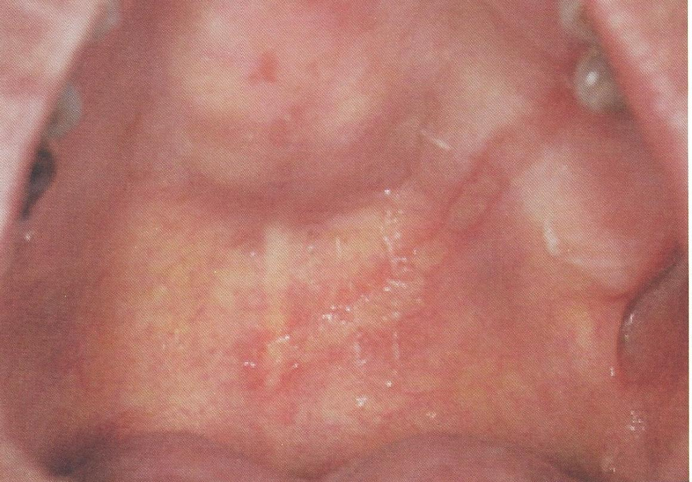

รอยไหม้จากน้ำยาล้างคลองรากฟัน
สาเหตุ ความร้อนหรือสารเคมี
มีประวัติสัมผัสสิ่งระคายเคือง
ลักษณะเป็นแผลหรือรอยแดงปกคลุมด้วยผิวสีเหลืองหรือสีขาว
เกิดการตายของเยื่อบุผิวเป็นคราบสีขาว
เมื่อเช็ดออกจะปรากฏรอยแดงหรือแผลอยู่ภายใต้
มักมีอาการเจ็บแสบ แต่หายได้เองหลังนำสิ่งระคายเคืองออก